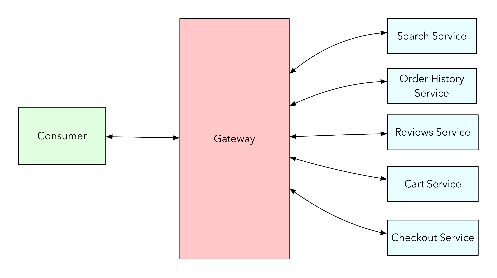
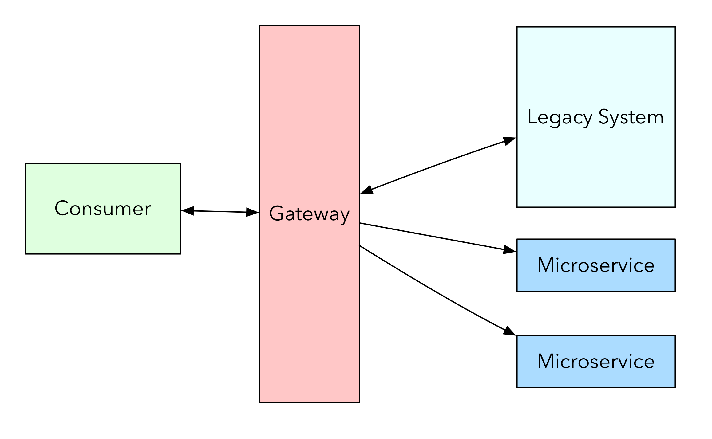
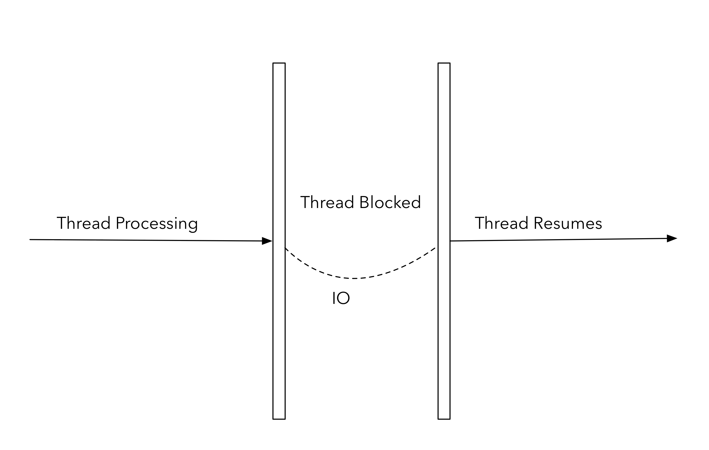
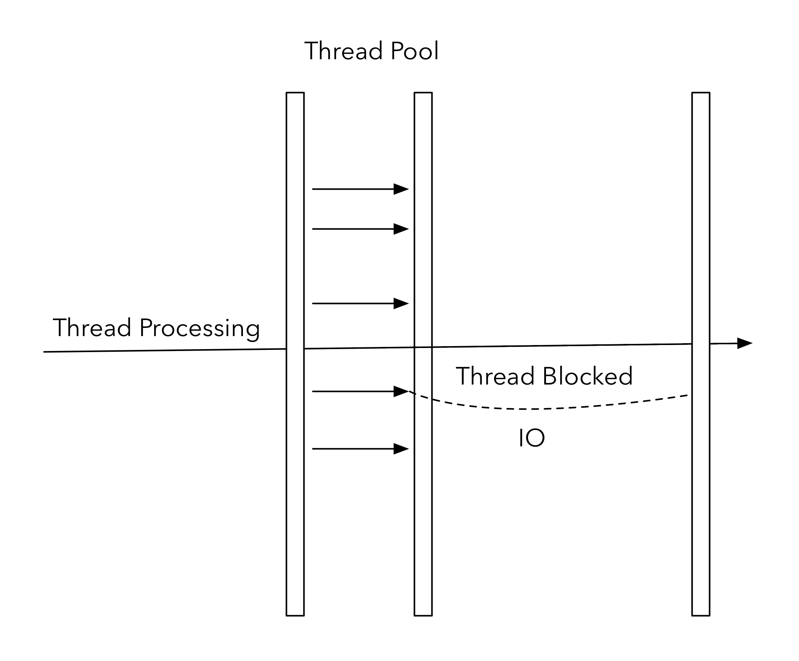

Spring Cloud Gateway
Biju Kunjummen
Heavily borrowed from Spencer Gibb, Sree
Tummidi's Spring One Presentation
Gateway Routing
Courtesy of https://docs.microsoft.com/en-us/azure/architecture/patterns/gateway-routing CONTROL
Functions
- Routing
- Security
- Rate Limiting/Throttling
- Monitoring
- Canary
Sourced from http://microservices.io/patterns/apigateway.html
Gateway Sample - Monolith Strangling
Gateway Types
- Appliance - F5, Apigee, CA API Gateway
- SAAS - Apigee, AWS ELB
- Web Server - Nginx, Apache mod_proxy
- Mesh - East/West rather than North/South - Envoy/Istio/LinkerD
- Software - Zuul/Spring Cloud Gateway/Amabassador
Zuul
- Servlet Based
- Blocking API
- Not Dev friendly
Blocking API

Courtesy of Netflix Zuul2 Blog
Async & Non-Blocking - What does it mean
A Blocking IO Call
Async Blocking IO Call
Non-Blocking Event Loop
More ContentCourtesy of Netflix Zuul2 Blog
Non-Blocking IO is good but coding is difficult
- Callback hell
- Difficult to debug
Reactor Types

Spring Cloud Gateway
- Spring 5 based
- Reactor
- Netty Server and Http Client - Non-Blocking IO
- Spring Boot 2
Java/Kotlin based DSL to configure the following

DEMOS..DEMOS..DEMOS..
References
- https://github.com/spring-cloud/spring-cloud-gateway
- Project Page
- Spring One 2017 Presentation by Spencer Gibb, Sree Tummidi Youtube
- Spring One 2017 Presentation by Spencer Gibb, Sree Tummidi Deck
- Chris Richardson - API Gatway Pattern
- Spencer Gibbs Oscon Presentation
- Zuul2 Intro
- Simon Basle - Reactor 3